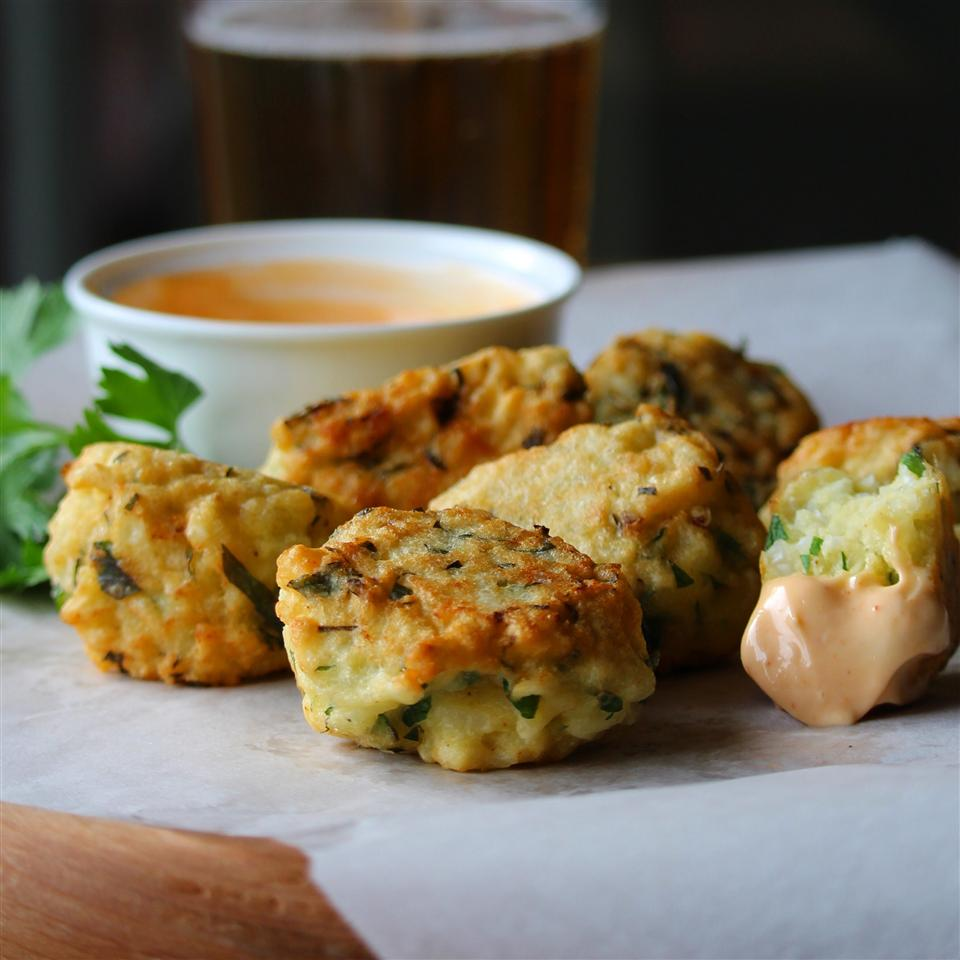

Fried Rice Cakes (Brazilian-Style)

Rice cakes
Description
White cooked rice is combined with fresh chopped parsley and Parmesan cheese and deep-fried to perfection. Great as a side dish. An original from Brazil. Serve hot.
Ingredients
- 2 cups cooked white rice
- 3/4 cup all-purpose flour
- 2 eggs
- 1/2 cup chopped fresh parsley
- 1/4 cup grated Parmesan cheese
- salt and ground black pepper to taste
- oil for frying
Steps
- Mix white rice, flour, eggs, parsley, Parmesan cheese, salt, and black pepper together with a wooden spoon in a bowl. Shape spoonfuls of the mixture into balls.
- Heat oil in a large saucepan or deep-fryer over medium heat until hot. Fry balls a few at a time until browned, about 2 minutes per side. Transfer to a plate lined with paper towels.